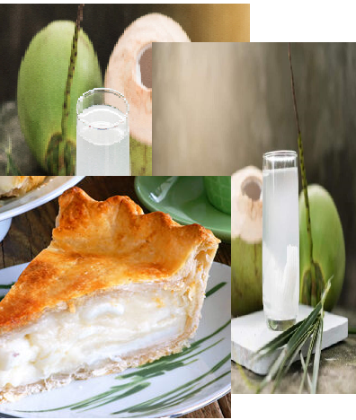
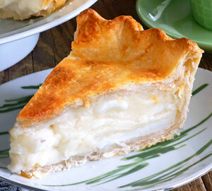

BUKO-BUKO

BUKO-BUKO is a premium brand dedicated to bringing the tropical goodness of coconuts into every bite.
Whether you’re craving a healthy snack or a sweet indulgence, BUKO-BUKO offers a diverse collection of
coconut-based products. From creamy coconut milk beverages, crunchy coconut chips, to sweet coconut macaroons and
rich coconut-flavored chocolates, our offerings are made with the finest natural ingredients.
Sourced from the best coconut farms, BUKO-BUKO celebrates the versatility of this tropical fruit, offering
options that suit a variety of tastes and dietary needs. Whether you are vegan, gluten-free, or simply someone who
loves the refreshing taste of coconut, our treats are crafted to bring you the purest coconut experience in every bite.
Perfect for snacking, gifting, or adding a tropical touch to your recipes, BUKO-BUKO provides a healthy,
flavorful alternative to everyday snacks. Enjoy the nourishing benefits of coconuts while indulging in a truly delightful experience.
BUKO-BUKO is more than just a brand; it's a celebration of nature’s most versatile and nutritious fruit – the coconut.
Our mission is to bring the pure, rich taste of coconut to your everyday life, offering a range of delicious and wholesome
products that cater to every taste preference and dietary need. Whether you’re looking for a healthy snack or a sweet treat,
our offerings promise an authentic coconut experience in every bite.
At BUKO-BUKO, we take pride in sourcing our coconuts from sustainable, eco-friendly farms. Our coconuts are handpicked at peak
ripeness, ensuring the highest quality and taste. From the crisp texture of our coconut chips to the smooth, velvety consistency of our coconut creams, every product is crafted with care to preserve the natural flavors and health benefits of this tropical fruit.
CONTACT US
Developers
Carl Angelo Cabatingan
Jairus Nob
Cj Angelo Timog
